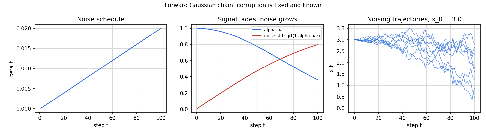
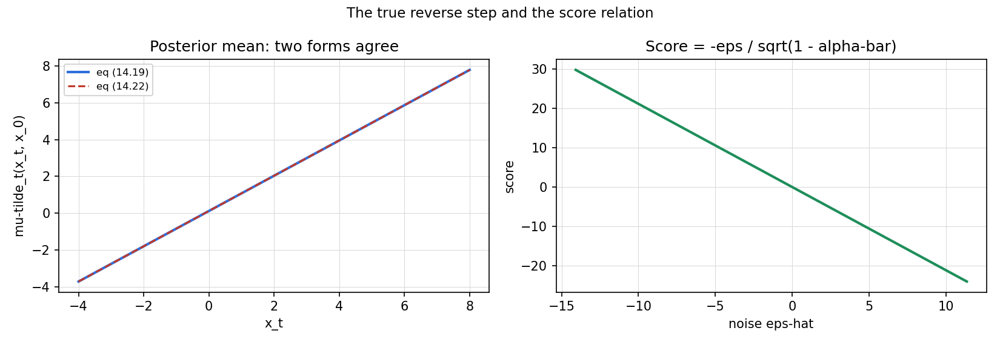

Lesson 12 · Diffusion models
Lesson 12, Diffusion models
Unit: cs229-U12. Leaf concepts: cs229-U12-C01 to C12 (forward Gaussian chain, accumulated noise, reverse distribution parameterization, conditional Gaussian relations, ELBO terms, denoising objective, prediction parameterizations, sampling, continuous-time view, score relation, boundary assumptions, held-out evaluation). Date: 2026-10-06. Baseline: October 6, 2026.
Source mapping
Chapter 14 (SRC-01, PDF pages 181-190) was read in full on 2026-10-06: the fixed forward Markov chain (14.1-14.10), the learned Gaussian reverse parameterization (14.12-14.13), the ELBO decomposition (14.15-14.17), the denoising reduction to weighted noise prediction (14.18-14.28), the sampling loop (14.29), and the continuous-time reverse diffusion theorem (14.30-14.40). Lecture 11 transcript covers diffusion (SRC-02), headers inspected, transcript content not yet read in depth. Discretization of pixel values (Ho et al. [2020] section 3.3, cited in the notes footnote) and held-out ELBO evaluation are standard background beyond the notes’ inspected text. Taught at that boundary. Leaf rows carry SOURCE ATTRIBUTION PENDING until the RUN 6 pass.
Scope and objectives
Scope: generative modeling by reversing a fixed noising process. The forward chain adds Gaussian noise. The learned reverse chain removes it, one step at a time, starting from white noise.
Objectives: the learner can (1) write the forward transition and the closed form of x_t given x_0, (2) explain why the true one-step reverse posterior is Gaussian and derive its mean, (3) reduce the ELBO to the noise-prediction objective, (4) run the sampling loop, (5) state the score relation in the continuous-time view, and (6) list the assumptions the whole construction stands on.
Dependencies
Prerequisites: P06, P08, P18 (shared bridges, linked). Unit U10 (EM, ELBO), Unit U11 (VI as ELBO optimization).
Not-yet-understood list:
- Why fixing the forward process is allowed (remediated in SL-01).
- Where the score term comes from (remediated in SL-04).
SL-01: The forward Gaussian chain
Covers C01 (forward Gaussian chain), C02 (accumulated noise).
Source anchor
SRC-01 section 14.1, pages 181-183. The forward process is a fixed Markov chain x_0, x_1, …, x_T with x_0 drawn from the data distribution p_data. Each step adds a small Gaussian perturbation:
q(x_t | x_{t-1}) = N(x_t, sqrt(1 - beta_t) x_{t-1}, beta_t I). (14.1)
The betas live in (0, 1) and are small in practice, about 1e-4 to 1e-2. Write alpha_t = 1 - beta_t.
Motivating question
Generative modeling means sampling new data. How do you train a model to produce samples when you only have a dataset of examples?
Mental model
Destroy on purpose, then learn to undestroy. The forward chain turns any image into white noise through hundreds of tiny Gaussian steps. Because every step is Gaussian and the schedule is fixed, the noisy state at any time step has a closed form. The learning problem then becomes: given a noisy sample at time t, recover the noise that was added. That is noise removal, not generation, and it is a supervised task with ground truth available from the forward chain itself.
The closed form
Unroll the recursion x_t = sqrt(alpha_t) x_{t-1} + sqrt(beta_t) epsilon_t with epsilon_t drawn from N(0, I) independently. Products of the shrinkage factors accumulate. With alpha-bar_t = alpha_1 * … * alpha_t,
x_t = sqrt(alpha-bar_t) x_0 + sqrt(1 - alpha-bar_t) epsilon-hat_t, epsilon-hat_t drawn from N(0, I). (14.5)
The notes prove this by unrolling (14.6-14.9) and checking that the accumulated noise covariance is (1 - alpha-bar_t) I.
Covariance interpolation
Because the noise added at each step is independent of the state, Cov(x_t) = alpha_t Cov(x_{t-1}) + beta_t I (14.4). Since alpha_t + beta_t = 1, each step interpolates the covariance toward the identity. If x_0 is normalized per dimension, the chain keeps the same scale and converges to N(0, I). In the limit, q(x_T | x_0) tends to N(0, I) for every x_0 (14.10). The notes assume q(x_T) is exactly spherical Gaussian afterward.
Computed example
Take T = 100, beta linear from 1e-4 to 0.02, x_0 = 3.0 in one dimension. Then alpha-bar_50 = 0.7772, so x_50 has mean sqrt(0.7772) * 3.0 = 2.6447 and variance 1 - 0.7772 = 0.2228 (standard deviation 0.4720). The script draws 20,000 samples of x_50 by the closed form and checks the sample mean against 2.6447 within 0.02. Run visuals/u12/render_u12.py for the values.
Correctness checks
- alpha-bar_t must decrease monotonically with t. If your schedule gives a non-monotone alpha-bar, the beta values are wrong.
- The marginal variance stays near 1 for normalized data. If x_T explodes, alpha_t + beta_t does not equal 1 somewhere.
- Single-step sampling with (14.3) and direct sampling with (14.5) must agree in distribution for the same t.
Nearest alternative
Learn the forward process too (as in VAEs). Here it is fixed, which removes half the learning problem and guarantees the latent distribution at time T is known.
Failure case
If beta_t is too large early, one step wipes out structure and the chain is not smooth: the reverse model must make huge jumps, which the Gaussian reverse kernel cannot represent well. Small betas are a load-bearing choice.
SL-02: Reverse parameterization and the true posterior
Covers C03 (reverse distribution parameterization), C04 (conditional Gaussian relations).
Source anchor
SRC-01 section 14.2 and the first half of 14.3, pages 183-186. The reverse chain factorizes as q(x_0:T) = q(x_T) times the product of q(x_{t-1} | x_t) (14.11). We do not know these reverse conditionals, so we approximate each one with a Gaussian whose mean comes from a neural network:
p_theta(x_{t-1} | x_t) = N(x_{t-1}, mu_theta(x_t, t), sigma_t^2 I). (14.12)
Together with the prior p_theta(x_T) = N(0, I) this defines a full generative model (14.13).
Motivating question
The forward process is easy. We need the reverse: from noise to data. What family do we put on each reverse step?
Mental model
Each reverse step is a small denoising move. For small steps, a Gaussian with a learned mean is enough. The variance sigma_t^2 is fixed (later we set it to a specific value) or learned. The network sees the noisy state and the time step, and outputs where the state should move. Sampling starts at white noise and walks backward to a clean sample.
The true reverse posterior is Gaussian
Conditioning on x_0 as well as x_t, the true reverse kernel is tractable. Since x_1, …, x_T are jointly Gaussian given x_0, the conditional q(x_{t-1} | x_t, x_0) is Gaussian by the conditional-Gaussian formula (notes Lemma A.1.2). The algebra gives
q(x_{t-1} | x_t, x_0) = N(x_{t-1}, mu-tilde_t(x_t, x_0), beta-tilde_t I), (14.18)
with beta-tilde_t = (1 - alpha-bar_{t-1}) / (1 - alpha-bar_t) * beta_t and
mu-tilde_t(x_t, x_0) = sqrt(alpha-bar_{t-1}) beta_t / (1 - alpha-bar_t) * x_0 + sqrt(alpha_t) (1 - alpha-bar_{t-1}) / (1 - alpha-bar_t) * x_t. (14.19)
The mean is a weighted average of x_0 and x_t: a tug toward the clean sample and a tug toward the current noisy state.
Matching the variance
Choose sigma_t^2 = beta-tilde_t. Then the learned reverse kernel and the true posterior have the same covariance. The KL divergence between two Gaussians with equal covariance is half the squared Mahalanobis distance of the means:
KL = (1 / (2 beta-tilde_t)) * ||mu-tilde_t - mu_theta||^2. (14.20-14.21)
Training must match one mean vector. Nothing else is learned.
Computed example
With the SL-01 schedule, beta-tilde_50 = 0.00960. Take x_0 = 3.0 and the toy x_50 = 3.0420 from SL-03. Then mu-tilde_50 from (14.19) is 3.0394. The script sweeps 61 values of x_t and verifies that (14.22) agrees to 1.8e-15.
Correctness checks
- beta-tilde_t is always below beta_t. If it is not, the alpha-bar products are wrong.
- mu-tilde_t must lie between x_0 and x_t in each coordinate (it is a convex combination only after the sqrt factors are accounted for, check it numerically).
- (14.19) and (14.22) must agree exactly. They are the same quantity written two ways.
Nearest alternative
Learn sigma_t^2 per step (Nichol and Dhariwal [2021], cited in the notes). More capacity, slightly better likelihoods, but the mean is where most of the work happens.
Failure case
If the reverse kernel is parameterized as a Gaussian but the true reverse conditional is strongly non-Gaussian (huge beta_t), the model cannot fit it. Again small steps keep the Gaussian choice honest.
SL-03: ELBO to the denoising objective
Covers C05 (ELBO terms), C06 (denoising objective), C07 (prediction parameterizations).
Source anchor
SRC-01 section 14.3, pages 184-188. The goal is maximizing log p_theta(x_0), which integrates over the whole path (14.14) and is intractable. With latent path x_1:T and auxiliary distribution q(x_1:T | x_0) (the forward chain), the ELBO identity (11.9-11.10) gives
log p_theta(x_0) >= E_q[log p_theta(x_0:T) / q(x_1:T | x_0)]. (14.15)
ELBO terms
Using the chain rule for KL (notes Lemma A.1.4), the KL part splits into a sum over time steps:
KL(q(x_1:T | x_0) || p_theta(x_1:T)) = KL(q(x_T | x_0) || p_theta(x_T)) + sum_{t=2}^{T} E_q[KL(q(x_{t-1} | x_t, x_0) || p_theta(x_{t-1} | x_t))]. (14.16)
L_T has no parameters (p_theta(x_T) is fixed N(0, I)) and is dropped. Renaming: L_0 is the final reconstruction term, and L_1 … L_{T-1} are noise-removal terms. Each noise-removal term asks the reverse kernel to match the true Gaussian posterior of SL-02.
The denoising reduction
Plug the equal-covariance KL (14.21) in. Each denoising term is a squared error between the true posterior mean and the network mean. Now the key simplification. The posterior mean (14.19) is a function of x_0 and x_t. Using (14.5), replace x_0 by (x_t - sqrt(1 - alpha-bar_t) epsilon-hat_t) / sqrt(alpha-bar_t). After algebra,
mu-tilde_t(x_t, x_0) = (1 / sqrt(alpha_t)) x_t - beta_t / (sqrt(alpha_t) sqrt(1 - alpha-bar_t)) * epsilon-hat_t. (14.22)
So reconstructing mu-tilde_t is equivalent to reconstructing the noise epsilon-hat_t. Define a noise-prediction network epsilon_theta(x_t, t) and set
mu_theta(x_t, t) = (1 / sqrt(alpha_t)) x_t - beta_t / (sqrt(alpha_t) sqrt(1 - alpha-bar_t)) * epsilon_theta(x_t, t). (14.23)
Then each term is a weighted noise error:
L_{t-1} = beta_t^2 / (2 beta-tilde_t alpha_t (1 - alpha-bar_t)) * E[||epsilon-hat_t - epsilon_theta(x_t, t)||^2]. (14.24)
The L_0 term takes the same weighted noise-prediction form (14.25-14.26), with the final-step variance playing the denominator role.
Prediction parameterizations
The network predicts epsilon (noise prediction). By the algebra above, this is equivalent to prediction of x_0 or of mu-tilde_t directly: the three are linked by (14.5) and (14.22). In practice the weights are dropped and the model trains on the unweighted loss
L_t(theta) = ||epsilon - epsilon_theta(x_t, t)||^2, (14.28)
with x_t = sqrt(alpha-bar_t) x_0 + sqrt(1 - alpha-bar_t) epsilon.
Training algorithm
- Sample a clean example x_0 from the data.
- Sample a time step t uniformly from {1, …, T}.
- Sample noise epsilon from N(0, I).
- Form x_t by (14.27).
- Take a gradient step on the loss (14.28).
One sample, one time step, one noise vector per update. No labels. The forward chain creates its own supervision.
Computed example
One-dimensional toy: x_0 = 3.0, t = 50, drawn epsilon = 0.8417. Then x_50 = 2.6447 + 0.4720 * 0.8417 = 3.0420. The oracle noise predictor recovers epsilon exactly, a perturbed predictor off by delta adds delta^2 to the unweighted loss. The script prints these values.
Correctness checks
- The unweighted loss must go down as the predictor approaches the true noise. If it does not, the x_t construction is wrong.
- t must be uniform over 1..T. Sampling t always large biases the model toward heavy noise.
- epsilon must be fresh per update. Reusing noise couples the gradient estimates.
Nearest alternative
Predict x_0 directly instead of epsilon. Same ELBO, different parameterization, epsilon prediction is the standard choice and gives better sample quality in the DDPM paper.
Failure case
Training with the exact ELBO weights instead of the unweighted loss puts heavy weight on small t (near-clean steps). Ho et al. found this hurts sample quality. The weights are correct for likelihood, wrong for perceptual quality. This is the sampling-objective versus training-objective split from U01.
SL-04: Sampling, continuous time, and the score
Covers C08 (sampling), C09 (continuous-time view), C10 (score relation).
Source anchor
SRC-01 sections 14.3-14.4, pages 188-190. At test time, start from x_T drawn from N(0, I) and iterate t = T down to 1: form the mean mu_theta(x_t, t) by (14.23) and sample
x_{t-1} = mu_theta(x_t, t) + sigma_t xi, xi drawn from N(0, I), (14.29)
with xi = 0 at the final step. The forward chain becomes an SDE
dX_t = f(X_t, t) dt + g(t) dW_t, (14.30)
and Anderson’s reverse-time theorem says the reversed process is also a diffusion, with drift -f + g^2 times the score grad_x log p_t (14.32).
Motivating question
Training is noise removal. How do we get new samples, and why does the gradient of the log density keep appearing?
Mental model
Sampling runs training backward in time. The network predicts the noise at each step, the mean formula turns that into a denoising step, a fresh small noise injection keeps the chain stochastic until the end. In continuous time, the same idea is a reverse SDE. The reverse drift needs to know which directions increase the marginal density at that noise level. That direction is exactly the score, grad_x log p_t. This is why the Gaussian reverse kernel was not an arbitrary choice: for small steps the reverse transition is approximately Gaussian with a score-shifted mean (14.35-14.40).
The score relation
From the closed form (14.5), conditioned on x_0, x_t is Gaussian with mean sqrt(alpha-bar_t) x_0 and variance (1 - alpha-bar_t) I. The score of this conditional is
grad_x log q(x_t | x_0) = -(x_t - sqrt( alpha-bar_t) x_0) / (1 - alpha-bar_t).
But x_t - sqrt(alpha-bar_t) x_0 = sqrt(1 - alpha-bar_t) epsilon-hat_t, so
grad_x log q(x_t | x_0) = -epsilon-hat_t / sqrt(1 - alpha-bar_t).
The score is the negative noise, rescaled. Predicting epsilon and predicting the score are the same task up to a known scalar. This is the bridge between DDPMs and score-based models (Song et al. [2021], cited in the chapter introduction).
Computed example
SL-03 toy: x_t = 3.0420, sqrt(alpha-bar_50) = 0.8816, 1 - alpha-bar_50 = 0.2228. The score is -(3.0420 - 0.8816 * 3.0) / 0.2228 = -1.7829. The rescaled noise is -0.8417 / 0.4720 = -1.7829. They match. The script verifies this identity to 1e-10 and against finite differences to 1e-6.
Correctness checks
- Sampling must start at x_T from N(0, I), not from data. Starting from a data point turns generation into noisy reconstruction.
- The final step must have xi = 0. Extra noise at t = 1 blurs the output.
- The score relation must hold exactly for the conditional. If it does not, the x_t construction or the gradient is wrong.
Nearest alternative
Score-based models with SDE solvers: learn the score directly and integrate the reverse SDE with a numerical solver, instead of the discrete T-step loop. Same family, different machinery.
Failure case
Too few reverse steps with a coarse schedule: the small-step Gaussian approximation breaks and samples degrade. The discrete loop needs enough steps to keep each reverse kernel near-Gaussian.
SL-05: Assumptions and held-out evaluation
Covers C11 (boundary assumptions), C12 (held-out evaluation).
Source anchor
Notes sections 14.1-14.3 plus the Ho et al. [2020] section 3.3 citation for pixel discretization. Held-out ELBO evaluation is standard background beyond the notes’ inspected text, taught at that boundary.
Assumptions that carry the construction
- q(x_T) is exactly N(0, I). The notes assume this after arguing alpha-bar_T is near zero. If the schedule stops too early, sampling starts from the wrong prior.
- beta_t small. Each forward step is a tiny perturbation, which justifies Gaussian reverse kernels and the discrete approximation of the reverse SDE.
- sigma_t^2 = beta-tilde_t. The variance is fixed, not learned. The mean carries the model.
- Images are continuous. Real pixels are discrete. Ho et al. [2020] section 3.3 adds truncation and discretization on top of the continuous model. Without this, likelihood numbers on images are not comparable across papers.
- The unweighted loss is not the ELBO. It is a reweighting chosen for sample quality. Likelihood claims must use the exact ELBO.
Held-out evaluation
The ELBO is a lower bound on log likelihood for any data point, train or held-out. Evaluating the ELBO (with the exact weights, not the unweighted training loss) on held-out data gives a comparable number across models: a tighter bound means a better density model of unseen data. Two caveats: it is a bound, not the likelihood, so a looser bound can hide a better model, and the bound is only comparable when the discretization handling (assumption 4) is identical.
Correctness checks
- Report the weighted ELBO for evaluation, never the unweighted training loss.
- Held-out and train ELBO use identical preprocessing and discretization.
Nearest alternative
Sample-based evaluation (FID, human ratings) measures perceptual quality instead of likelihood. The notes’ framework is likelihood-based, the two rankings often disagree.
Failure case
Comparing ELBOs computed with different discretization or different T: the numbers are meaningless. Fix the evaluation protocol first.
Assessment
Breadth recall
E01: State the forward transition density of a diffusion model. E02: Write the closed form of x_t given x_0. E03: State the reverse parameterization p_theta(x_{t-1} | x_t). E04: Why is the true reverse posterior q(x_{t-1} | x_t, x_0) Gaussian? E05: Name the three ELBO terms after the decomposition. E06: Write the simplified training loss and the five training steps.
Deep oral ladders
L01 (forward and posterior): (1) Write q(x_t | x_{t-1}) with alpha_t. (2) Toy: the 1-D schedule with x_0 = 3.0. (3) Derive (14.5) from the recursion. (4) Implement single-step and closed-form sampling, check agreement. (5) Compare fixed vs learned forward process. (6) Debug: x_T has variance 40. Name the cause (beta/alpha mismatch). (7) Critique: the assumption q(x_T) = N(0, I). (8) Design: a schedule check that fails before training.
L02 (ELBO and sampling): (1) Write the ELBO with the path as latent. (2) Toy: the epsilon recovery. (3) Derive (14.22) from (14.19) and (14.5). (4) Implement the five training steps. (5) Compare weighted ELBO vs unweighted loss. (6) Debug: samples are blurry but the loss is low. Name the cause (weighting or too few steps). (7) Critique: the fixed variance choice. (8) Design: a held-out ELBO comparison protocol.
Analytical exercises
E07: Derive the score relation grad_x log q(x_t | x_0) = -epsilon / sqrt(1 - alpha-bar_t) from (14.5). Answer in keys. E08: Show that beta-tilde_t < beta_t for all t. Answer in keys.
Failure diagnosis
E09: A trained model produces good samples at t near T but garbage near t = 1. Diagnose.
Counterfactual comparison
E10: Team A trains with the exact ELBO weights. Team B trains with the unweighted loss. Which wins on likelihood, which on sample quality, and why?
Research question
E11: Measure sample quality vs number of reverse steps at fixed schedule. State the falsifiable claim about where quality saturates.
Implementation task
E12: Implement forward sampling, verify the posterior-mean identities (14.19) = (14.22), verify the score relation by finite differences, and report the numbers.
Visual units
visuals/u12/u12_forward_noising.png: the noise schedule, alpha-bar decay, and sample noising trajectories, computed.

visuals/u12/u12_posterior_mean.png: the two forms of the posterior mean agree across a sweep, plus the score relation, computed.

Research reading and extension
Read: SRC-01 chapter 14 in full. Ho et al. [2020] sections 1-3. Song et al. [2021] sections 1-2. Extension: fit a tiny epsilon-predictor on a 2-D toy distribution and compare samples against the true distribution. Falsifiable claim: the MMD between generated and true samples falls below the MMD of a Gaussian fit.
Role bridges
- ML engineer: diffusion is the standard image/video generator. The training loop is five lines, the schedule is the main hyperparameter.
- Research engineer: the posterior-mean algebra (SL-02/SL-03) is the template for all denoising objectives. The score relation links DDPM and score-based code.
- Research scientist: the reverse-time theorem explains why Gaussian kernels are principled. Know the assumptions before trusting likelihood numbers.